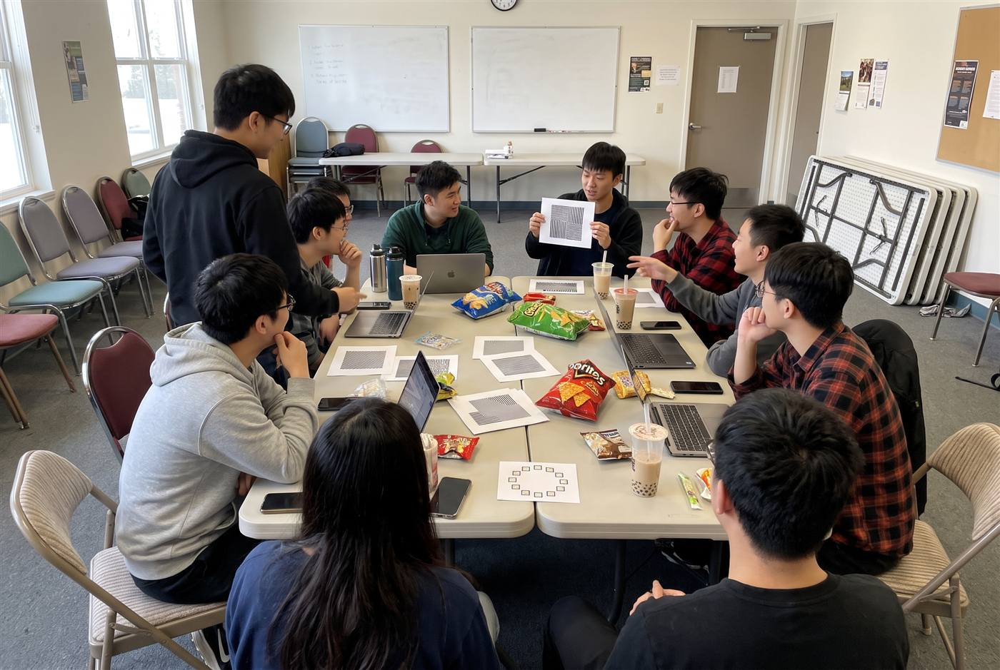

視界認知小測驗 第 3 版
你的理智還剩多少？
透過一些知覺、記憶與注意力的小題目，測出你的理智值，順便鑑定你看世界的方式！
開始測驗- 約 10 分鐘
- 免註冊
- 完成後可分享結果
歡迎來論壇和認知科學的同好們討論！
你是哪一型？
關於我們
視界同好會是一群喜歡認知科學的人在 2019 年辦起來的科普社群。我們把課本和論文裡有趣的實驗改寫成每個人都能玩的小測驗，再把相關的知識整理成小百科，有問題也能到論壇上聊聊。

我們好奇人們在自己的房間、用自己的裝置時，看見和記住了什麼。題目會依照大家的作答和回饋不定期調整；結果只是參考用，實際狀況還是得找專業機構測試喔！
- 累計作答次數
- 148,206
- 成立至今
- 7 年
- 目前題庫版本
- 3.2
受測須知
- 請在光線充足的環境下作答，並將螢幕亮度調整至舒適的程度
- 平時配戴眼鏡或隱形眼鏡者，請配戴後再開始
- 作答期間請盡量保持專注，避免切換視窗
- 未滿 12 歲者的視覺與認知功能仍在發育，測驗分數僅供參考
常見問題
需要註冊帳號嗎？
打開網頁，填寫暱稱及年齡就可以開始作答
測驗結果可以當作診斷依據嗎？
本測驗僅供自我了解與研究參考，不具醫療診斷效力。如果對自身狀況有疑慮，請洽詢專業醫療人員
為什麼需要填寫年齡？
認知表現與年齡相關，填寫年齡後，系統才能選用對應的參考資料
中途離開的話，進度會消失嗎？
不會，下次用同一個瀏覽器打開時，會從上次的進度繼續
我的作答資料會上傳嗎？
不會，作答進度只保存在你目前使用的瀏覽器中，清除瀏覽資料後就會一併移除
版本更新紀錄
- v3.2.1
- 調整部分題目措辭；修正結果頁分享圖在深色模式下的顯示問題
- v3.2.0
- 詞條資料庫改版，新增站內搜尋功能
- v3.1.4
- 更新年齡層參考資料